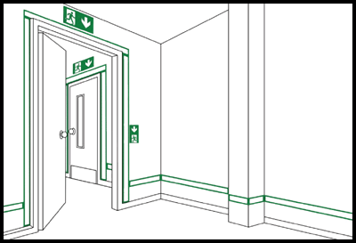

(1) Die ASR A2.3 "Fluchtwege und Notausgänge, Flucht- und Rettungsplan" regelt unter Punkt 7, in welchen Fällen ein optisches Sicherheitsleitsystem für Fluchtwege erforderlich ist. Darin wird u. a. gefordert, dass der Arbeitgeber Vorkehrungen zu treffen hat, damit sich die Beschäftigten bei Gefahr unverzüglich in Sicherheit bringen und schnell gerettet werden können. Dabei hat der Arbeitgeber nach Punkt 2.3 Abs. 1 des Anhanges der Arbeitsstättenverordnung der Anwesenheit der höchst möglichen Anzahl der anwesenden Personen Rechnung zu tragen; betriebsfremde Personen sind mit einzubeziehen.
(2) Der Einsatz von optischen Sicherheitsleitsystemen mit einer beidseitigen Kennzeichnung der Fluchtwege ist immer dann erforderlich, wenn eine Gefährdung durch Verrauchung nicht sicher ausgeschlossen werden kann und die Fluchtwegbreite > 3,60 m beträgt.
(3) Optische Sicherheitsleitsysteme sind entweder lang nachleuchtend, elektrisch oder als Kombination beider Systeme zu betreiben. Sie sind so zu errichten, dass Fluchtwege und Notausgänge sowie Gefahrstellen erkannt werden können.
(4) Innerhalb optischer Sicherheitsleitsysteme muss die Fluchtrichtung mit Hilfe der Sicherheitszeichen "Rettungsweg/Notausgang" (E001 bzw. E002) in Verbindung mit einem Zusatzzeichen (Richtungspfeil) gemäß ASR A1.3 "Sicherheits- und Gesundheitsschutzkennzeichnung" angegeben werden. Die Kennzeichnung der Fluchtrichtung ist im Verlauf des Fluchtweges und bei Richtungsänderungen anzubringen.
(5) Türflügel im Verlauf von Fluchtwegen dürfen wegen der möglichen Irreführung bei geöffneter Tür nicht mit Richtungsangaben versehen werden. In diesem Fall sind die Leitmarkierungen auf dem Fußboden weiter zu führen.
(6) Der Mindestabstand der Sicherheitszeichen voneinander ergibt sich aus der Erkennungsweite (siehe Tabelle 3 ASR A1.3 "Sicherheits- und Gesundheitsschutzkennzeichnung").
(7) Die Leitmarkierungen an der Wand und auf dem Boden sind so zu platzieren, dass sie die Sicherheitszeichen miteinander verbinden. Die Leitmarkierungen sind durchgehend bis zum nächsten sicheren Bereich anzubringen (siehe Abb. 1).
(8) Leitmarkierungen auf dem Boden werden als durchgehend angesehen, wenn mindestens drei Markierungen pro Meter in regelmäßigen Abständen angebracht sind. Die Markierungen müssen mindestens einen Durchmesser oder eine Kantenlänge von 5 cm haben.
(1) Langnachleuchtende Sicherheitsleitsysteme sind so zu bemessen und einzurichten, dass die Leuchtdichte der nachleuchtenden Materialien, gemessen am Einsatzort, nach 10 min nicht weniger als 80 mcd/m2 (Millicandela/m2) und nach 60 min nicht weniger als 12 mcd/m2 beträgt.
(2) Die Leitmarkierungen von langnachleuchtenden Sicherheitsleitsystemen müssen eine Mindestbreite von 5 cm haben. Die Mindestbreite der Leitmarkierungen in Form von Streifen von langnachleuchtenden Sicherheitsleitsystemen kann bis auf 2,5 cm verringert werden, wenn die Leuchtdichte nach 10 min nicht weniger als 100 mcd/m2 und nach 60 min nicht weniger als 15 mcd/m2 beträgt.
(3) Fluchttüren in Fluchtwegen und Notausgängen sind mit langnachleuchtenden Materialien zu umranden (siehe Abb. 1). Der Türgriff ist langnachleuchtend zu gestalten oder der Bereich des Türgriffes ist flächig langnachleuchtend zu hinterlegen. Treppen, Treppenwangen, Handläufe und Rampen im Verlauf von Fluchtwegen sind so zu kennzeichnen, dass der Beginn, der Verlauf und das Ende eindeutig erkennbar sind. Die oben genannten Werte gelten entsprechend. Das gilt auch für Notbetätigungseinrichtungen.

(1) Hinterleuchtete Sicherheitszeichen, die Teil eines optischen Sicherheitsleitsystems sind, sind im Abstand von maximal 10 m im Verlauf des Fluchtweges anzubringen. Bei jeder Richtungsänderung des Fluchtweges ist grundsätzlich ein hinterleuchtetes Sicherheitszeichen vorzusehen.
(2) Um die Leitfunktion zwischen bodennahen hinterleuchteten Sicherheitszeichen sicherzustellen, sind kontinuierliche elektrisch betriebene Leitmarkierungen oder niedrig montierte Sicherheitsleuchten einzusetzen. Dabei muss eine Beleuchtungsstärke von mindestens 1 lx mit einer Gleichmäßigkeit von < 40:1, gemessen in einer Höhe von 20 cm über dem Fußboden und einem Abstand von 50 cm von der Wand, auf der die Leuchten montiert sind, erreicht werden. Dabei ist störende Blendung durch Abschirmung zu vermeiden.
(3) Die elektrisch betriebenen Sicherheitsleitsysteme müssen die erforderliche Beleuchtungsstärke nach Absatz 2 mindestens für einen Zeitraum von 60 min nach Ausfall der Allgemeinbeleuchtung erbringen.
(4) Elektrisch betriebene Sicherheitsleitsysteme sind mit einer selbsttätig einsetzenden Stromquelle für Sicherheitszwecke auszurüsten.
Werden dynamische Sicherheitsleitsysteme eingesetzt, müssen alle damit verbundenen sicherheitsrelevanten Komponenten so gestaltet sein, dass auch bei Ausfall einzelner Komponenten die Funktionsfähigkeit des Gesamtsystems erhalten bleibt.